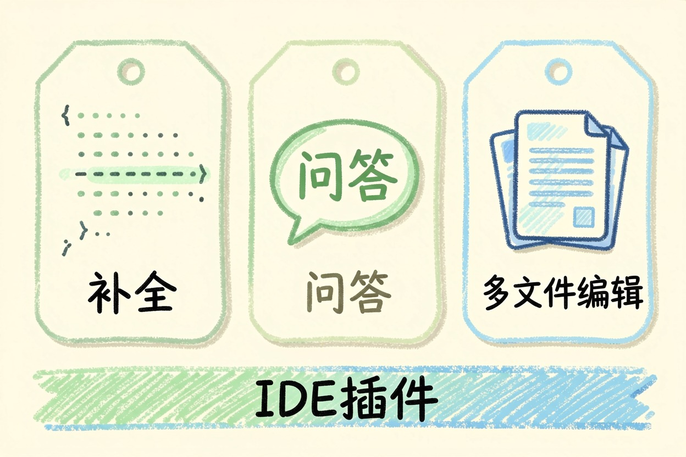
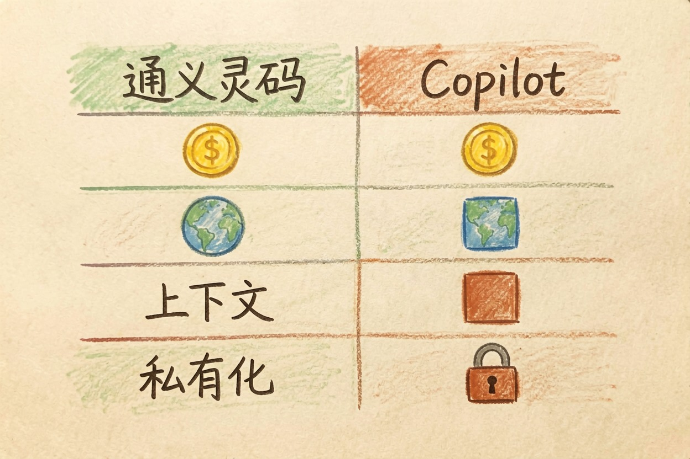

通义灵码好用吗？国内免费代码助手功能说明
免费档对个人日常开发够用，什么时候该付费、企业代码能不能传，三条边界一次说清。
聊到通义灵码，先要明确它解决的是哪类问题。理解通义灵码的关键，是看它替你省下了什么。
聊到通义灵码，先要明确它解决的是哪类问题。
通义灵码好用吗？先说结论
通义灵码好用吗？一句话：个人与学生用免费档顶日常，团队和重代码场景再考虑付费。它补全和问答都不错，关键是先把免费边界摸清，别一上来就掏钱。它最大的卖点，是免费档就能覆盖大多数个人开发的日常。
先说明白：通义灵码现在叫什么
通义灵码已经升级更名为「Qoder CN」，原来的 lingma.aliyun.com 入口对应 Qoder CN。别搜旧名找不到页面：个人社区版免费，专业版价格官方经常调，具体看官网当期说明。品牌名会变，能力方向没变，还是阿里系那个代码助手，旧文档里的用法基本还能照搬。改名是为了和开放平台的能力对齐，不是换了产品。
它能做什么：补全、问答、多文件编辑

代码补全跟手，写 Python、Java、前端都行。研发问答能解释报错、讲设计思路，报错解释比搜索引擎翻帖快得多。多文件编辑可以一次改多个相关文件，适合重构场景：改一个函数签名，相关调用一起动，省得一个个文件翻。IDE 插件覆盖主流编辑器，装好就能用。补全速度比想象中快，长文件的上下文也跟得上。让它找 bug，可以这样问：
请审查下面这段代码：
1. 找出可能的空指针或边界问题
2. 指出复杂度高的地方
3. 给一版更稳的改法，不要只给理论
代码：（粘贴你的片段）和 Copilot 这类付费助手差在哪

| 维度 | 通义灵码 / Qoder CN | Copilot |
|---|---|---|
| 价格 | 社区版免费，专业版订阅 | 付费订阅 |
| 网络 | 国内直连 | 需要额外条件 |
| 上下文 | 面向个人项目够用 | 深度集成 IDE |
| 私有化 | 企业方案 | 基本没有 |
选谁不选谁，先看你代码在哪个生态里跑。想横向看更多，读AI 编程助手横向对比；要选 Cursor 还是 Copilot，看Cursor 和 Copilot 怎么选；从零上手编辑器，有Cursor 新手教程。
免费额度、付费边界和代码安全
免费社区版覆盖日常补全和问答，额度机制看体感信号：短补全一直顺畅，长上下文和批量任务变慢，就是接近边界了。什么时候该升专业版？团队协作、私有化部署、更长上下文的需求出现时再考虑。个人写项目，社区版已经能顶住；完全不想写代码、只想做网页的，看不会写代码用 AI 做网页。一旦要多人共享代码规范、统一审阅，就要算付费账。别把企业核心代码整库上传，先用小样本试，确认不会用于训练再说。AI 给的代码要人工验，别直接合进主干。合规要求严的团队，先问清数据去向再决定用不用。政策、额度和专业版价格以官网当期为准，入口看通义灵码官方与阿里云帮助文档，产品页在阿里云产品页。免费不是万能，但足够你把开发日常跑起来。通义灵码好用吗，装个插件写半天代码就有答案。
本文信息核对于 2026-08-06。AI 产品的价格、免费额度与功能变动频繁，实际以各工具官网当前说明为准。